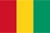

Spelers die (enkel) speelden voor één of meerdere van de voorgangers van OHL, zoals: FERRERA, Emilio (Stade Leuven) MERTENS, Dries (Stade Leuven) PRAET, Dennis (Stade Leuven)
Spelers die nooit op de bank zaten: EKANGAMENE, Charni
 HAIDARA, Zainoul OSABUTEY, Jonah SADZOUTE, Scotty
 FERRERA, Emilio (Stade Leuven)
FERRERA, Emilio (Stade Leuven) OSABUTEY, Jonah
OSABUTEY, Jonah SADZOUTE, Scotty
SADZOUTE, Scotty